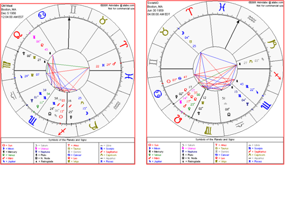
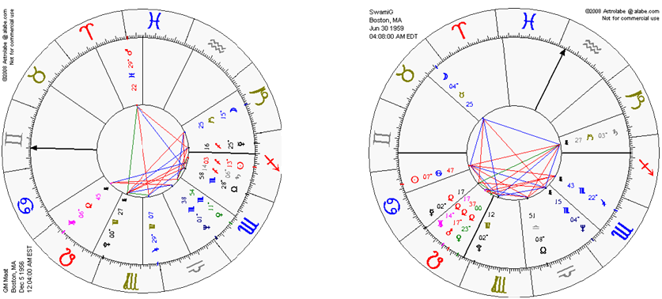
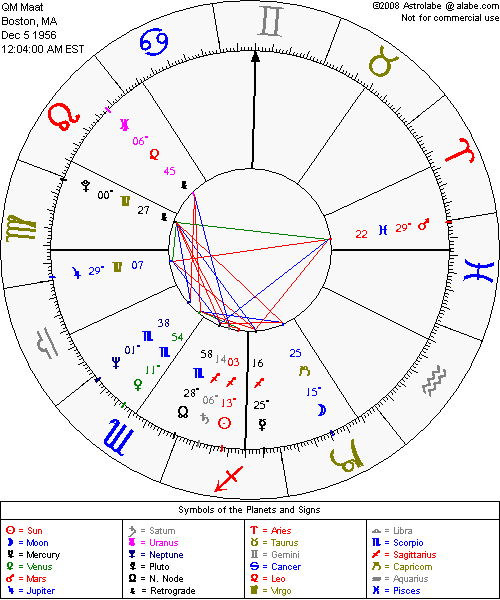
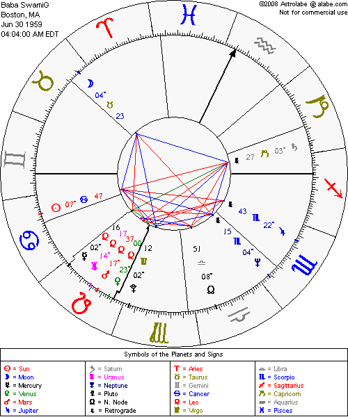
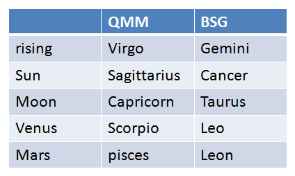
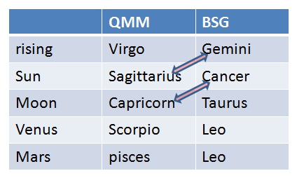

Queen Mother Maat & Baba SwamiG
A synastry and polarity analysis using natal charts to evaluate Sun–Moon resonance, Venus–Mars chemistry, Rising sign rapport, and karmic indicators.
When Cancer and Capricorn Moon meet, the Moon finds its mountain and the mountain finds its tide.
Individual Foundations — Red Pair
What the Red Pair Reveals
The red-bordered images show each natal chart with full aspect tables. This level reveals the internal architecture of each soul before they are brought into relationship.
QMM (left) carries:
- Sun in Sagittarius — philosophical, expansive, truth-seeking.
- Moon in Capricorn — emotionally disciplined, responsible, structured.
- Rising Virgo — analytical, service-oriented, healing-focused.
- Venus in Scorpio, Mars in Pisces — deep bonds, spiritualized passion.
BSG (right) carries:
- Sun in Cancer — protective, nurturing, clan-centered.
- Moon in Taurus — steady, sensual, comfort-seeking.
- Rising Gemini — communicative, quick, versatile.
- Venus & Mars in Leo — generous, expressive, royal-hearted fire.
This pair makes it clear who they are independently: QMM as structured mystic and healer, BSG as nurturing leader and heart-centered fire. Compatibility begins with this foundation.
Relational Dynamics
How the 90 Degree Rotation Shows Ideal Compatibility
In the 90 Degree Rotation, the charts are simplified and placed in a direct relationship with each other. Here, the most important compatibilities become obvious:
- Sun–Moon Polarity: QMM’s Moon in Capricorn opposes BSG’s Sun in Cancer. Cancer–Capricorn is one of astrology’s classic “ideal partner” axes, blending emotional nurturing (Cancer) with structure and responsibility (Capricorn).
- Venus–Mars Cross-Activation: QMM’s Venus in Scorpio engages BSG’s Mars in Leo, while BSG’s Venus in Leo interacts with QMM’s Mars in Pisces. These fixed and water–fire combinations create strong attraction, creativity, and transformative intimacy.
- Mercury-Ruled Rising Signs: Virgo (QMM) and Gemini (BSG) are both ruled by Mercury, signaling a relationship built on conversation, analysis, and shared ideas.
This pair visually confirms that their charts are not merely compatible — they complete each other through opposition, polarity, and shared rulerships.
Dual Chart Wheel
The dual wheel illustrates how planets are distributed between signs and houses in relation to one another. We see how one chart fills the gaps of the other, creating a shared field of purpose. The Cancer–Capricorn axis becomes the spine of the connection, while the fixed Scorpio–Leo energy anchors devotion and loyalty.
Individual Natal Wheels
 Side-by-side, we see QMM’s chart leaning into Saturnian and Neptunian themes (discipline + mysticism), while BSG’s chart amplifies Lunar and Leonine energy (caregiving + radiance). Together they form a pattern of structure supporting nurture — ideal for spiritual leadership, teaching, and communal guardianship.
Core Planetary Comparison
 Summary of the Main Axes
- Sun vs. Moon: Cancer Sun / Capricorn Moon - emotional–structural axis.
- Moon vs. Sun: Taurus Moon / Sagittarius Sun - comfort vs. quest, grounding the visionary.
- Venus–Mars: Scorpio–Leo and Leo–Pisces - intense passion, sacred play, spiritual eros.
- Rising Signs: Virgo & Gemini - Mercury channels for teaching, writing, speaking, and analysis.
These pairings meet classical synastry standards for ideal compatibility: there is complementarity rather than sameness, polarity rather than duplication, and enough shared rulerships to keep communication strong.
Karmic & Destiny Themes
Saturn, Nodes, and Sacred Obligation
The Cancer–Capricorn axis is traditionally associated with ancestry, lineage, and duty. When a couple shares this axis strongly, it often indicates that the relationship itself is in service to a larger community or spiritual mission. Saturn’s influence adds a sense of commitment and long-term responsibility — not just to each other, but to the people they teach and protect.
Node and Saturn contacts in synastry commonly point to a karmic contract. QMM and BSG’s charts suggest that part of their agreement is to weave structured wisdom (Capricorn) with ancestral care and spiritual mothering (Cancer), which mirrors the work of SGI itself.
Composite Energy — The Relationship as a Being
When their energies are blended, the “third entity” of the relationship resembles a teacher–healer archetype: grounded yet empathetic, disciplined yet nurturing. This composite field is well-suited for leading initiations, guiding Iyawos, and holding space for transformation within a temple or institute setting.
Overall Destiny Statement
Taken together, the Sun–Moon opposition, Mercury-ruled Rising signs, Venus–Mars cross-links, and karmic axis emphasis all describe a union that is:
- Personally supportive — each balances the other’s emotional needs.
- Vocationally aligned — shared teaching, healing, and leadership.
- Spiritually purposeful — a relationship that exists to serve a larger sacred work.